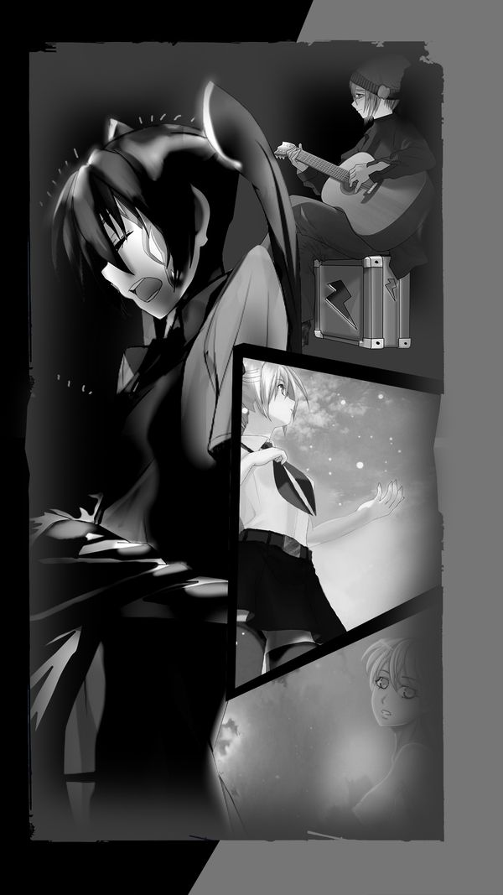
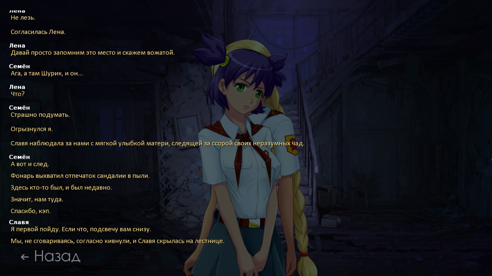
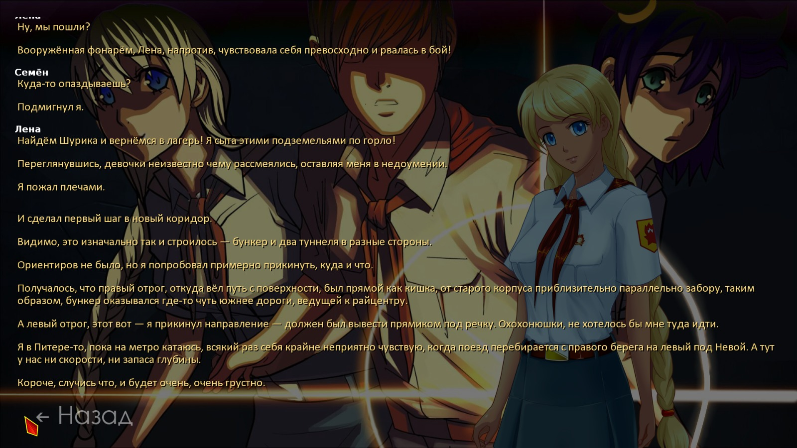
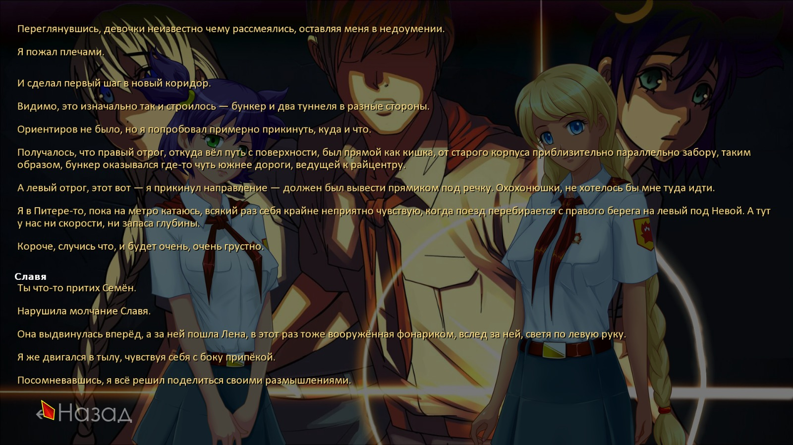

7 дней лета, билд 0.23d (Славя-классик, д.5)
Страница 1 из 11 • 1, 2, 3 ... 9, 10, 11 
7 дней лета, билд 0.23d (Славя-классик, д.5)
автор 7dl-kun в Вт 15 Сен 2015 - 6:53
- Спойлер:

7 дней лета, билд 0.23d
5 день классик-рута Слави, подгон транзитов с ФЗ-рута, послесловия в РФ-концовках.
Забирать c гуглодрайва папкой: https://drive.google.com/folderview?id=0BwAhLCg03AtueUR3NldEOERqc0k&usp=sharing
архивом: https://drive.google.com/file/d/0BwAhLCg03AtuQmdzUVdoajVVUGM/view?usp=sharing
чангелог:
1. Пересмотрена система эпилогов, в частности, допуск с альтернативного первого дня открывает дополнительные сюжетные моменты в РФ-гудах.
2. Эпилоги: для владельцев большого запаса кармы сделал возможным в последний момент вильнуть в сторону РФ,
3. Мику: баланс лп, эпилогов, прохождений начиная с первого же дня. В качестве эксперимента поиздевался над "письмом".
4. Изменения файловой архитектуры (читаем как "опять было делать нечего, перетаскивал папки")
5. Собственный информативный виджет (за идею приветы улетают Элдхенну) - не забудьте в настройках фильтров включить "Прогресс и информация по моду 7ДЛ" и отключить прочие.
В левой части виджета отображается роль, карма (при достижении порога 75 отображается цветным), воля, если есть, и день/рут/версия мода.
В левой части виджета отображается прогресс с девушками (при достижении порога прохода на рут отображается цветом девушки, при достижении порога для хорошей концовки отображается ярко), в случае, если идём на сыча, левая часть виджета переключается в режим подсчёта пт - Ольги, Д3 и Ульяны соответственно.
6. Как водится, куча натыренных артов, музыки и иже с ними.
7. Перепиленный эпилог Дваче в РФ, теперь логичнее укладывается в связку с послесловием (Мику-гуды в Японии и РФ на очереди).
8. Отловленные вами жуки в отдельной зелёной коробочке (=
9. Временная прыгалка на концовки для упрощения тестирования.
Последний раз редактировалось: 7dl-kun (Вс 20 Сен 2015 - 0:12), всего редактировалось 6 раз(а)

7dl-kun- Находка для шпиона

- Сообщения : 3026
Дата регистрации : 2014-09-07
Откуда : здесь столько наркоманов?
Re: 7 дней лета, билд 0.23d (Славя-классик, д.5)
автор LRS в Вт 15 Сен 2015 - 9:18
- Спойлер:
- I'm sorry, but an uncaught exception occurred.
While running game code:
File "game/scenario_alt/Scenario/WIP/alt_route_sl_cl_2.rpy", line 548, in script
File "game/scenario_alt/Scenario/WIP/alt_route_sl_cl_2.rpy", line 548, in python
File "media.rpy", line 561, in python
File "media.rpy", line 500, in python
TypeError: unsupported operand type(s) for +: 'ReadbackADVCharacter' and 'str'
-- Full Traceback ------------------------------------------------------------
Full traceback:
File "D:\Alcohol 120%\VN\Бесконечное лето\everlasting_summer-1.1-all\renpy\bootstrap.py", line 265, in bootstrap
renpy.main.main()
File "D:\Alcohol 120%\VN\Бесконечное лето\everlasting_summer-1.1-all\renpy\main.py", line 327, in main
run(restart)
File "D:\Alcohol 120%\VN\Бесконечное лето\everlasting_summer-1.1-all\renpy\main.py", line 78, in run
renpy.execution.run_context(True)
File "D:\Alcohol 120%\VN\Бесконечное лето\everlasting_summer-1.1-all\renpy\execution.py", line 509, in run_context
context.run()
File "D:\Alcohol 120%\VN\Бесконечное лето\everlasting_summer-1.1-all\renpy\execution.py", line 288, in run
node.execute()
File "D:\Alcohol 120%\VN\Бесконечное лето\everlasting_summer-1.1-all\renpy\ast.py", line 720, in execute
renpy.python.py_exec_bytecode(self.code.bytecode, self.hide, store=self.store)
File "D:\Alcohol 120%\VN\Бесконечное лето\everlasting_summer-1.1-all\renpy\python.py", line 1304, in py_exec_bytecode
exec bytecode in globals, locals
File "game/scenario_alt/Scenario/WIP/alt_route_sl_cl_2.rpy", line 548, in <module>
$ meet (ba, "Саныч")
File "media.rpy", line 561, in meet
File "media.rpy", line 500, in set_name
TypeError: unsupported operand type(s) for +: 'ReadbackADVCharacter' and 'str'
Windows-post2008Server-6.2.9200
Ren'Py 6.16.3.502
Everlasting Summer 1.0
LRS- Ньюфаг

- Сообщения : 12
Дата регистрации : 2015-05-03
Возраст : 29
Re: 7 дней лета, билд 0.23d (Славя-классик, д.5)
автор 7dl-kun в Вт 15 Сен 2015 - 9:58
7dl-kun- Находка для шпиона
- Сообщения : 3026
Дата регистрации : 2014-09-07
Откуда : здесь столько наркоманов?
Re: 7 дней лета, билд 0.23d (Славя-классик, д.5)
автор Dantiras в Вт 15 Сен 2015 - 11:17
№1 alt_route_sl_cl Поиски Шурика (здание старого корпуса).
1907-1911
- Код:
sl "Я первой пойду.{w} Если что, подсвечу вам снизу."
"Мы, не сговариваясь, согласно кивнули, и Славя скрылась на лестнице."
hide sl_op
show un normal pioneer at center
with dissolve
- Спойлер:

№2 alt_route_sl_cl Поиски Шурика (поход в бункер).
2203-2210
- Код:
show sl normal pioneer at right with dspr
sl "Ты что-то притих Семён."
"Нарушила молчание Славя."
"Она выдвинулась вперёд, а за ней пошла Лена, в этот раз тоже вооружённая фонариком, вслед за ней, светя по левую руку."
"Я же двигался в тылу, чувствуя себя с боку припёкой."
"Посомневавшись, я всё решил поделиться своими размышлениями."
show un normal pioneer at left with dspr
un "Я слышала про эти туннели."
- Спойлер:


Орфография
alt_route_sl_cl_2
138 "Я покаянно крикрыл глаза."
325 "Потыкала бы меня палочкой, посмотрела бы на мои реакция - и вуаля."
alt_res_card_shuffles
1808 sh "Насчёт клуба кибернетиков, если вдру что…"

Dantiras- Мизантроп

- Сообщения : 615
Дата регистрации : 2015-08-17
Re: 7 дней лета, билд 0.23d (Славя-классик, д.5)
автор Dantiras в Вт 15 Сен 2015 - 11:47
- Краш игры:
- I'm sorry, but an uncaught exception occurred.
While running game code:
File "game/scenario_alt/Scenario/WIP/alt_route_sl_cl_2.rpy", line 548, in script
File "game/scenario_alt/Scenario/WIP/alt_route_sl_cl_2.rpy", line 548, in python
File "media.rpy", line 561, in python
File "media.rpy", line 500, in python
TypeError: unsupported operand type(s) for +: 'ReadbackADVCharacter' and 'str'
-- Full Traceback ------------------------------------------------------------
Full traceback:
File "C:\Users\Dantiras\Desktop\everlasting_summer-1.1\renpy\bootstrap.py", line 265, in bootstrap
renpy.main.main()
File "C:\Users\Dantiras\Desktop\everlasting_summer-1.1\renpy\main.py", line 327, in main
run(restart)
File "C:\Users\Dantiras\Desktop\everlasting_summer-1.1\renpy\main.py", line 78, in run
renpy.execution.run_context(True)
File "C:\Users\Dantiras\Desktop\everlasting_summer-1.1\renpy\execution.py", line 509, in run_context
context.run()
File "C:\Users\Dantiras\Desktop\everlasting_summer-1.1\renpy\execution.py", line 288, in run
node.execute()
File "C:\Users\Dantiras\Desktop\everlasting_summer-1.1\renpy\ast.py", line 720, in execute
renpy.python.py_exec_bytecode(self.code.bytecode, self.hide, store=self.store)
File "C:\Users\Dantiras\Desktop\everlasting_summer-1.1\renpy\python.py", line 1304, in py_exec_bytecode
exec bytecode in globals, locals
File "game/scenario_alt/Scenario/WIP/alt_route_sl_cl_2.rpy", line 548, in <module>
$ meet (ba, 'Саныч')
File "media.rpy", line 561, in meet
File "media.rpy", line 500, in set_name
TypeError: unsupported operand type(s) for +: 'ReadbackADVCharacter' and 'str'
Windows-7-6.1.7601-SP1
Ren'Py 6.16.3.502
Everlasting Summer 1.0
Логика
alt_route_sl_cl_2
71 "Комната была насквозь незнакомая, сводчатый потолок выдавал внутреннисти домика-бочки, а с соседней кровати доносилось мирное посапывание."
Суть проблемы. А как же альтернативный первый день? Семён уже побывал в этом домике у Слави.
Возможное решение. Сделать два варианта с alt_day1_random_val.
Dantiras- Мизантроп
- Сообщения : 615
Дата регистрации : 2015-08-17
Re: 7 дней лета, билд 0.23d (Славя-классик, д.5)
автор eugen805 в Вт 15 Сен 2015 - 11:52
eugen805- Ньюфаг
- Сообщения : 1
Дата регистрации : 2015-09-15
Re: 7 дней лета, билд 0.23d (Славя-классик, д.5)
автор Surv в Вт 15 Сен 2015 - 12:41
Вроде правильно написал.
Surv- Хикка

- Сообщения : 114
Дата регистрации : 2015-06-06
Re: 7 дней лета, билд 0.23d (Славя-классик, д.5)
автор Surv в Вт 15 Сен 2015 - 12:57
Surv- Хикка
- Сообщения : 114
Дата регистрации : 2015-06-06
Re: 7 дней лета, билд 0.23d (Славя-классик, д.5)
автор Surv в Вт 15 Сен 2015 - 15:41
После установки нового билда 23а первые запуски игры шли хорошо,дочитал до 3 дня,потом я узнал что в мод вшит новый виджет и я решил удалить старый свой виджет.После удаления виджета запускаю игру и выдаёт
I'm sorry, but an uncaught exception occurred.
While executing init code:
File "game/scenario_alt/Config/alt_res_widget.rpy", line 2, in script
File "game/scenario_alt/Config/alt_res_widget.rpy", line 2, in python
NameError: name 'filters' is not defined
-- Full Traceback ------------------------------------------------------------
Full traceback:
File "C:\Users\Андрей\Downloads\everlasting_summer-1.1-all\everlasting_summer-1.1-all\renpy\bootstrap.py", line 265, in bootstrap
renpy.main.main()
File "C:\Users\Андрей\Downloads\everlasting_summer-1.1-all\everlasting_summer-1.1-all\renpy\main.py", line 263, in main
game.context().run(node)
File "C:\Users\Андрей\Downloads\everlasting_summer-1.1-all\everlasting_summer-1.1-all\renpy\execution.py", line 288, in run
node.execute()
File "C:\Users\Андрей\Downloads\everlasting_summer-1.1-all\everlasting_summer-1.1-all\renpy\ast.py", line 720, in execute
renpy.python.py_exec_bytecode(self.code.bytecode, self.hide, store=self.store)
File "C:\Users\Андрей\Downloads\everlasting_summer-1.1-all\everlasting_summer-1.1-all\renpy\python.py", line 1304, in py_exec_bytecode
exec bytecode in globals, locals
File "game/scenario_alt/Config/alt_res_widget.rpy", line 2, in <module>
$ filters["widget__7dl_widget"] = u"Прогресс и информация по моду 7ДЛ"
NameError: name 'filters' is not defined
Windows-7-6.1.7601-SP1
Ren'Py 6.16.3.502
Everlasting Summer 1.0
Surv- Хикка
- Сообщения : 114
Дата регистрации : 2015-06-06
Re: 7 дней лета, билд 0.23d (Славя-классик, д.5)
автор Dantiras в Вт 15 Сен 2015 - 16:04
Что-то я забывчивый. Семён мог быть в домике Слави был не только в альт. первый день, но и в третий после купания на диком пляже. Так что, ещё несколько раздвину границы претензии по логике.Dantiras пишет:
Суть проблемы. А как же альтернативный первый день? Семён уже побывал в этом домике у Слави.
Dantiras- Мизантроп
- Сообщения : 615
Дата регистрации : 2015-08-17
Re: 7 дней лета, билд 0.23d (Славя-классик, д.5)
автор 7dl-kun в Вт 15 Сен 2015 - 17:54
Нет желания скачать версию 1.1? Хотя бы ту сборку, что на викистраничке лежит. Не уверен, что дело в ней, но всё-таки.Surv пишет:
Everlasting Summer 1.0
7dl-kun- Находка для шпиона
- Сообщения : 3026
Дата регистрации : 2014-09-07
Откуда : здесь столько наркоманов?
Re: 7 дней лета, билд 0.23d (Славя-классик, д.5)
автор XOLODOS в Вт 15 Сен 2015 - 20:22

XOLODOS- Сыч

- Сообщения : 66
Дата регистрации : 2015-07-31
Возраст : 24
Откуда : Россия, Смоленская обл. г.Починок
Re: 7 дней лета, билд 0.23d (Славя-классик, д.5)
автор Штейн в Вт 15 Сен 2015 - 20:34
Всегда знал, что товарищ Автор - нечто больше, чем человек. Такая скорость и качество творческого детища - это совершенно запредельный уровень.XOLODOS пишет:Тащ автор. Снимаю перед вами шляпу. Честно не ожидал обновы да еще и так быстро, да еще и куча изменений. Браво!

Штейн- Людовед

- Сообщения : 1205
Дата регистрации : 2015-06-02
Возраст : 19
Откуда : Астора
Re: 7 дней лета, билд 0.23d (Славя-классик, д.5)
автор Surv в Вт 15 Сен 2015 - 20:49
В альт версии 1-ого дня в домике Слави
'm sorry, but an uncaught exception occurred.
While running game code:
File "game/scenario_alt/Scenario/Done/alt_route_common.rpy", line 2078, in script
File "renpy/common/000statements.rpy", line 204, in python
File "game/scenario_alt/Scenario/Done/alt_route_common.rpy", line 2078, in python
NameError: name 'sfx_blanket_off' is not defined
-- Full Traceback ------------------------------------------------------------
Full traceback:
File "C:\Users\Андрей\Downloads\everlasting_summer-1.1-all\everlasting_summer-1.1-all\renpy\bootstrap.py", line 265, in bootstrap
renpy.main.main()
File "C:\Users\Андрей\Downloads\everlasting_summer-1.1-all\everlasting_summer-1.1-all\renpy\main.py", line 327, in main
run(restart)
File "C:\Users\Андрей\Downloads\everlasting_summer-1.1-all\everlasting_summer-1.1-all\renpy\main.py", line 78, in run
renpy.execution.run_context(True)
File "C:\Users\Андрей\Downloads\everlasting_summer-1.1-all\everlasting_summer-1.1-all\renpy\execution.py", line 509, in run_context
context.run()
File "C:\Users\Андрей\Downloads\everlasting_summer-1.1-all\everlasting_summer-1.1-all\renpy\execution.py", line 288, in run
node.execute()
File "C:\Users\Андрей\Downloads\everlasting_summer-1.1-all\everlasting_summer-1.1-all\renpy\ast.py", line 1533, in execute
self.call("execute")
File "C:\Users\Андрей\Downloads\everlasting_summer-1.1-all\everlasting_summer-1.1-all\renpy\ast.py", line 1546, in call
renpy.statements.call(method, parsed, *args, **kwargs)
File "C:\Users\Андрей\Downloads\everlasting_summer-1.1-all\everlasting_summer-1.1-all\renpy\statements.py", line 144, in call
return method(parsed, *args, **kwargs)
File "renpy/common/000statements.rpy", line 204, in execute_play_sound
renpy.sound.play(eval(p["file"]),
File "C:\Users\Андрей\Downloads\everlasting_summer-1.1-all\everlasting_summer-1.1-all\renpy\python.py", line 1338, in py_eval
return eval(py_compile(source, 'eval'), globals, locals)
File "game/scenario_alt/Scenario/Done/alt_route_common.rpy", line 2078, in <module>
play sound sfx_blanket_off fadein 0
NameError: name 'sfx_blanket_off' is not defined
Windows-7-6.1.7601-SP1
Ren'Py 6.16.3.502
Everlasting Summer 1.0
Surv- Хикка
- Сообщения : 114
Дата регистрации : 2015-06-06
Re: 7 дней лета, билд 0.23d (Славя-классик, д.5)
автор 7dl-kun в Вт 15 Сен 2015 - 20:53
7dl-kun- Находка для шпиона
- Сообщения : 3026
Дата регистрации : 2014-09-07
Откуда : здесь столько наркоманов?
Re: 7 дней лета, билд 0.23d (Славя-классик, д.5)
автор Surv в Вт 15 Сен 2015 - 21:00
Surv- Хикка
- Сообщения : 114
Дата регистрации : 2015-06-06
Re: 7 дней лета, билд 0.23d (Славя-классик, д.5)
автор narutomang в Вт 15 Сен 2015 - 21:06
Notepad++'ом откройSurv пишет:А через какую прогу открывать чтобы отображались строки?
narutomang- Ньюфаг
- Сообщения : 1
Дата регистрации : 2015-08-01
Возраст : 18
Re: 7 дней лета, билд 0.23d (Славя-классик, д.5)
автор Дядя Вармог в Вт 15 Сен 2015 - 21:21

Дядя Вармог- Ньюфаг
- Сообщения : 7
Дата регистрации : 2015-06-01
Re: 7 дней лета, билд 0.23d (Славя-классик, д.5)
автор Surv в Вт 15 Сен 2015 - 21:30
Спасибо,помогло!7dl-kun пишет:О, бланкет - это шорох полотенца. В 1.1 он есть абсолютно точно, а вот для стима Элд писал вручную, хе-хе. Поставь значок #в начале строки 2078 в файле alt_route_common.rpy, а в следующем билде я с этим звуком что-нибудь придумаю.
Surv- Хикка
- Сообщения : 114
Дата регистрации : 2015-06-06
Re: 7 дней лета, билд 0.23d (Славя-классик, д.5)
автор Arlien в Вт 15 Сен 2015 - 21:40
Если вкратце - бей болт на Славю всеми доступными. Не помогай, пререкайся, игнорируй просьбы этц.как набирать очки воли?
Arlien- Людовед
- Сообщения : 1322
Дата регистрации : 2014-09-08
Re: 7 дней лета, билд 0.23d (Славя-классик, д.5)
автор Draug в Вт 15 Сен 2015 - 22:07
- Спойлер:
- I'm sorry, but an uncaught exception occurred.
While running game code:
File "game/scenario_alt/Scenario/WIP/alt_route_sl_cl_2.rpy", line 548, in script
File "game/scenario_alt/Scenario/WIP/alt_route_sl_cl_2.rpy", line 548, in python
File "media.rpy", line 561, in python
File "media.rpy", line 500, in python
TypeError: unsupported operand type(s) for +: 'ReadbackADVCharacter' and 'str'
-- Full Traceback ------------------------------------------------------------
Full traceback:
File "D:\Torrents\ELS\everlasting_summer-1.1-all\everlasting_summer-1.1-all\renpy\execution.py", line 288, in run
node.execute()
File "D:\Torrents\ELS\everlasting_summer-1.1-all\everlasting_summer-1.1-all\renpy\ast.py", line 720, in execute
renpy.python.py_exec_bytecode(self.code.bytecode, self.hide, store=self.store)
File "D:\Torrents\ELS\everlasting_summer-1.1-all\everlasting_summer-1.1-all\renpy\python.py", line 1304, in py_exec_bytecode
exec bytecode in globals, locals
File "game/scenario_alt/Scenario/WIP/alt_route_sl_cl_2.rpy", line 548, in <module>
$ meet (ba, 'Саныч')
File "media.rpy", line 561, in meet
File "media.rpy", line 500, in set_name
TypeError: unsupported operand type(s) for +: 'ReadbackADVCharacter' and 'str'
Windows-post2008Server-6.2.9200
Ren'Py 6.16.3.502
Everlasting Summer 1.0

Draug- Мизантроп
- Сообщения : 964
Дата регистрации : 2015-06-27
Возраст : 28
Откуда : Цитадель
Re: 7 дней лета, билд 0.23d (Славя-классик, д.5)
автор 7dl-kun в Вт 15 Сен 2015 - 22:10
7dl-kun- Находка для шпиона
- Сообщения : 3026
Дата регистрации : 2014-09-07
Откуда : здесь столько наркоманов?
Re: 7 дней лета, билд 0.23d (Славя-классик, д.5)
автор Draug в Вт 15 Сен 2015 - 22:14
Draug- Мизантроп
- Сообщения : 964
Дата регистрации : 2015-06-27
Возраст : 28
Откуда : Цитадель
Re: 7 дней лета, билд 0.23d (Славя-классик, д.5)
автор Дядя Вармог в Вт 15 Сен 2015 - 22:57
- Спойлер:
- После купания и помывки Славя говорит, что сводит Семёна в БАНЮ ЕЩЁ РАЗ. Но ведь бани в третьем дне не было, или я ошибаюсь?
Дядя Вармог- Ньюфаг
- Сообщения : 7
Дата регистрации : 2015-06-01
Re: 7 дней лета, билд 0.23d (Славя-классик, д.5)
автор Radkar в Вт 15 Сен 2015 - 23:02

Radkar- Сыч
- Сообщения : 49
Дата регистрации : 2014-10-01
Страница 1 из 11 • 1, 2, 3 ... 9, 10, 11